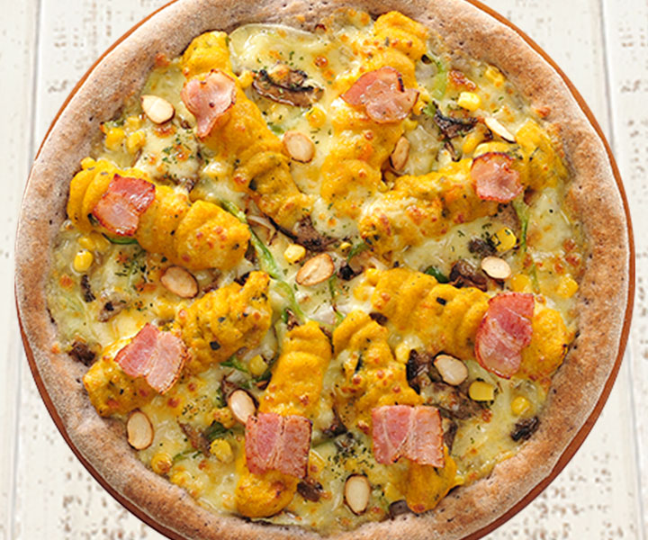

단호박 피자
달고 부드러운 피자

달콤한 단호박과 고소한 아몬드, 베이컨이 어우러져 단짠단짠한 한국식 피자
또 다른 알볼로의 베스트 셀러 메뉴이다. 사실 단 피자는 취향이 아니라 만들 때마다 이걸 왜 먹는 건지 모르겠다. 하지만 맛있으니 먹는 게 아닐까? 체다 치즈도 팍팍 들어간다. 중년 또는 어린아이들에게 인기가 많다. 그리고 만들기가 굉장히 쉽다. 짱.
단호박 피자 주문하기